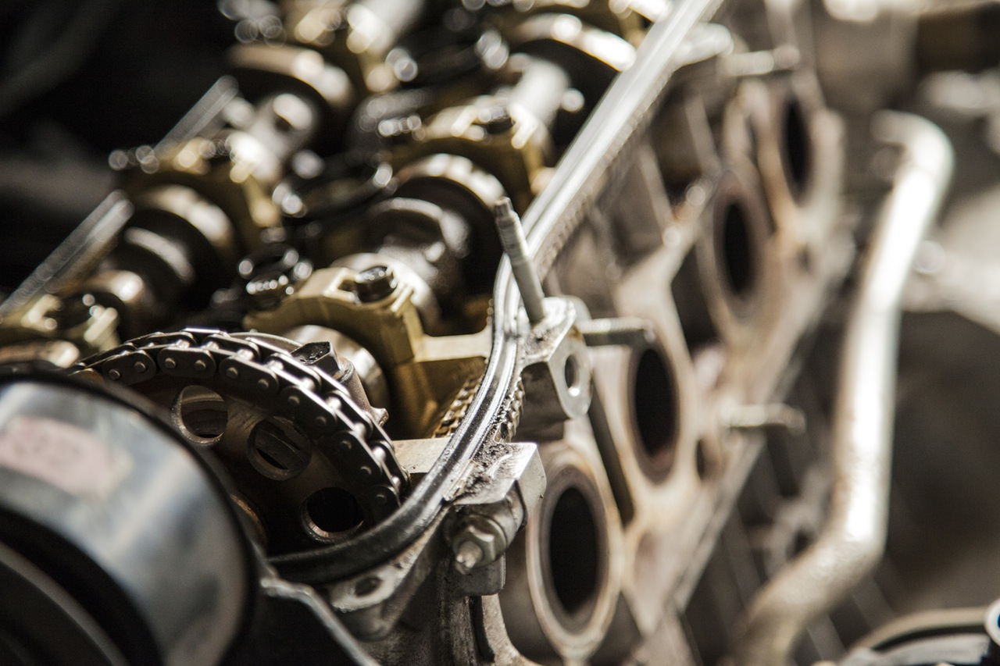
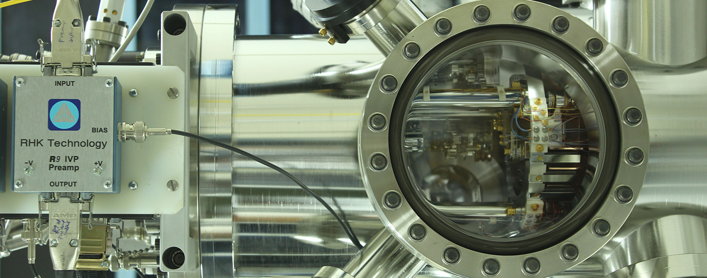
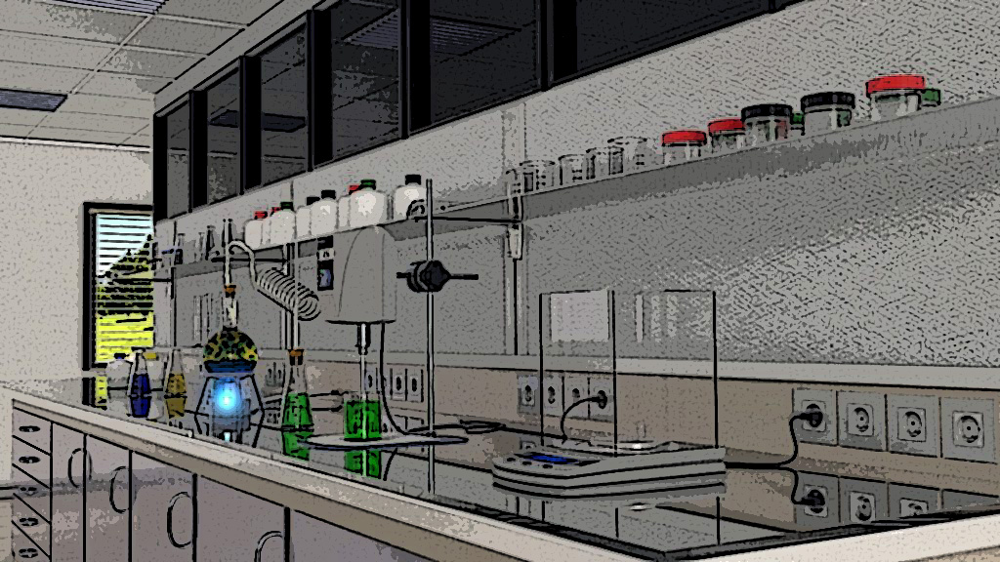

Mechanical Engineering
Mechanical engineering, perhaps the broadest and most diverse of engineering disciplines, provides an excellent opportunity for careers not only in engineering, but also in many other inter-disciplinary fields. At IIT Madras, the wide-ranging and fully accredited undergraduate and graduate programmes aim at developing creativity, practical and transferrable skills as well as intellect. This keeps our graduates in strong demand from a broad spectrum of industrial, government and commercial organizations.

Physics and Engineering Physics
The Department of Physics -- set in the sylvan campus of IIT Madras -- conducts research in many frontier areas. These areas include experimental solid state physics, optical and laser physics, and various aspects of theoretical and computational physics ranging from condensed matter to string theory and cosmology. The Department conducts programs at the Bachelor's, Master's as well as at the Doctoral Research levels. We conduct a vibrant undergraduate program -- Bachelor of Technology (B.Tech.) in 'Engineering Physics'-- in conjunction with the Department of Electrical Engineering.
Electrical Engineering
Research activities in the Department of Electrical Engineering are in three ways, academic, sponsored and Research Based Industrial Consultancy (RBIC). The latter two are mainly utilized to upgrade laboratory research equipment and facilities. Research projects worth nearly 18 Crore Rupees have been undertaken by our faculty in the last 6-7 years. There are four major groups in the department: (a) Communications, (b) Microelectronics and VLSI, (c) Power Electronics, Control, Robotics and Instrumentation and (d) Power systems and high voltage engineering.

Computer Science & Engineering
Global Excellence and Local Relevance in research, teaching, and technology development is the vision of the Department. The Department was started as the Computer Centre in 1973 with the acquisition of an IBM 370, perhaps the most powerful computer in India at that time. It offered M.Tech, M.S and PhD degree programmes. In 1983, the B.Tech degree programme was started. Today the Department has a vibrant student body numbering about 700. Over 60% are postgraduate, mostly supported by scholarships.

Civil Engineering
The Department of Civil Engineering has been in existence since the inception of IIT Madras in 1959 and has grown into a full fledged department with specialisations in all the major areas of Civil Engineering. The departmental activities embrace Planning, Design, Construction and Management. The academic programmes, B. Tech., M.Tech., M.S. and Ph.D., of the Civil Engineering department at IIT Madras are some of the best in the country and the world. Many of the faculty members have received advanced degrees and/or training from reputed institutions in India, Germany, UK., USA, Canada, Japan and Netherlands.

Bio Technology
The Department of Biotechnology at IIT Madras was founded in 2004 with a vision to be recognized as a Department of International repute with a strong interdisciplinary research and teaching base in biological sciences and engineering and an active collaboration with industries and health-care institutions. The department is housed in the ‘Bhupat and Jyoti Mehta School of Biosciences’. Currently the department has 31 faculty members, about 235 under graduate students, 186 Ph.D. and 20 M.S. Research Scholars, associated staff and Adjunct Faculty. These are exciting and challenging times for Biotechnologists.

Aerospace Engineering
The Department of Aerospace Engineering at the Indian Institute of Technology, Madras (IITM) was established in 1969. Since then it has been in the forefont of fundamental and applied research & development with scientific and social impact in the country. The department has been involved in activities supporting our national ambitions in the field of Aerospace Engineering. Continued interaction with R&D agencies of international repute in the field of aerospace engineering has led to mutually beneficial research activities.

Chemical Engineering
The Department’s vision is to be a global centre of academic and research excellence in Chemical Engineering Sciences and Technology, where knowledge is vigorously and meticulously pursued and disseminated, application to industry and society is valued, free thinking is encouraged, intellectual rigour is demanded and thoroughness is rewarded. We are in the process of establishing world class research facilities and research groups in specific areas of energy, environment and materials.

Metallurgical & Material Engineering
The Department of Metallurgical and Materials was established in 1959 as Department of Metallurgy and was renamed as Department of Metallurgical and Materials Engineering in 2003. The department has 30 dynamic faculty members, with their teaching, research and consultancy activities in various areas ranging from conventional metallurgy to frontiers of materials science. The department offers B.Tech, M.Tech, M.S and PhD degrees. The department continues to strive for excellence and realising its vision of becoming a leading department in the country for teaching, research and consultancy in the emerging areas of material science and engineering while consolidating its strength in traditional areas of metallurgical engineering. For more details please browse the dept. brochure.